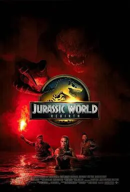

The genetics
Genetics appears in two ways. The island is a graveyard of InGen's genetic experiments: the Distortus rex and the Mutadons are failed hybrids and mutants that the company found too disturbing to display, a reminder of the hubris of the earlier films. The mission itself reflects a more realistic idea of what biotechnology might seek in such animals: biological material from the largest species is supposed to hold the key to a new treatment for cardiovascular disease. The pharmaceutical executive who wants to keep the cure exclusive is the villain, while the paleontologist and the mercenary choose to release the material as an open-source resource, framing the film's ethics around access to medical knowledge rather than genetic engineering as such. The science remains fictional: dinosaur DNA cannot be recovered from fossils, so the franchise's de-extinct animals are impossible to begin with, although the idea of studying unusual animals for medical insights is a real line of research.
How genetics is portrayed
- Overall portrayal of genetics
- mixed The film both condemns InGen's grotesque experiments and corporate greed and celebrates the promise of dinosaur DNA for medicine, which its heroes share with the world; it weighs reckless engineering against beneficial use.
- Outcome of the genetic intervention
- mixed InGen's mutants and hybrids kill a helicopter crew and Krebs and endanger everyone, while the samples secured for a heart-disease treatment are released freely.
- InGen
- villain Aim: commercial (negative). In the backstory it created transgenic and mutant dinosaurs such as the Distortus rex and Mutadons to satisfy demand for novelty, then abandoned the island after one escaped; presented as irresponsible.
- Martin Krebs (ParkerGenix)
- villain Aim: commercial, benevolent (mixed). The pharmaceutical executive mounts an illegal mission to gather dinosaur DNA for a heart-disease drug he wants to keep exclusive, endangers civilians and steals the samples at gunpoint; the villain, eaten by the Distortus rex.
- Zora Bennett and Dr. Henry Loomis
- hero Aim: benevolent (positive). They collect the biomaterial for the treatment and decide to release it as an open-source resource so everyone has access; the film's heroes.
The story
In 2027, most of Earth's climate has proved unsuitable for the dinosaurs, which survive only in an equatorial zone. Martin Krebs, an executive at the pharmaceutical company ParkerGenix, hires Zora Bennett, a former covert operative, and paleontologist Henry Loomis to collect DNA-containing samples from the three largest prehistoric species, the Mosasaurus, the Titanosaurus and the Quetzalcoatlus, which are needed for a new treatment for heart disease. With a small team, they travel illegally to Île Saint-Hubert, the site of an abandoned InGen laboratory where mutant and transgenic dinosaurs were kept. On the way, they rescue a shipwrecked family. Both groups face the island's creatures, including Mutadons, raptor-pterosaur hybrids, and the Distortus rex, a mutant six-limbed Tyrannosaurus. Krebs tries to steal the samples and is killed. The survivors escape, and Zora and Henry decide to make the biomaterial freely available worldwide.